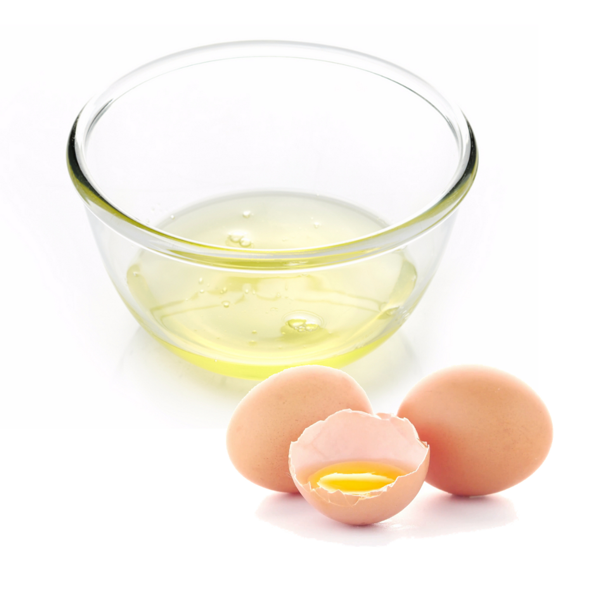

Oily Skin Type
When your skin produces excess sebum, it often becomes greasy, sweaty, and susceptible to skin acne, blackheads and whiteheads, and other skin problems. In other words, excessive sebum production is the main cause of oily skin.
Oily skin produces an excess of sebum that causes the skin to appear shiny and feel greasy—especially throughout the T-zone (forehead, nose, and chin). People with oily skin may tend to have less wrinkles, according to the American Academy of Dermatology (AAD),2 but they may also be more prone to enlarged pores, acne blemishes, blackheads, and whiteheads.
Keep in mind that just because oily skin produces more natural oils, this doesn’t mean that it requires any less moisture than other skin types. Supporting oily skin comes down to choosing the right products that nourish and hydrate, without clogging your pores or triggering breakouts. The ideal oily skin routine should feature a gentle, foaming cleanser that effectively removes dirt, excess oil, and other impurities. It should also include a lightweight, oil-free, and non-comedogenic moisturizer that provides your oily skin with the essential hydration it needs.
Identifying Oily skin
- Oily Appearance
- Open/Larger Pores
- Prone To Breakouts
- Clogger Pores
- Blackheads And Whiteheads
Causes Of Oily Skin
- Hormonal Changes-Changes occurring during hormonal imbalances, pregnancy, or puberty.
- Environment Changes-You can also experience oily skin because of your location and the season. If you live in a humid or hot climate, you will likely experience oily skin.
- Genetics-Most often, oily skin is a result of genes that have been passed on to you.
- Over-Exfoliation-- Exfoliating too much or using harsh chemicals that are not suitable for your skin kind can also stimulate sebum production.
Maintaining Oily Skin
- Moisturise-Even if you have oily skin, it is important to moisturise your skin as it will help balance out the overproduction of sebum.
- Stay hydrated-Drinking enough water will help flush out any excess oil and toxins layered on your skin surfaces.
- Double Cleanse-To get rid of the oil effectively, cleanse your face twice, once in the day and once before you hit the bed.
- Don’t touch your face repeatedlyHaving oily skin means that breakouts and blemishes may occur occasionally, tempting you to touch them. However, it is important not to pop or pick pimples to prevent further infection.
Home Remedies For Oily Skin
1. Aloe Vera
If you have oily skin, you can use aloe vera gel to prevent pimples and acne from forming on your face. If you have an oily face, you can also use aloe vera gel as a moisturiser as it rejuvenates the skin.
2. Egg Whites
There is no evidence that egg whites tighten pores, although people sometimes use an egg white face mask to combat oily skin. The white from one egg is usually enough for a face mask.
How to Make It:-mix the white from one egg with the juice of half a lemonwhisk the mixture until it thickens .apply the mixture to the face for 10 minutes .clean face with warm water to remove the mask .pat face dry.
3. Honey

Honey has antibacterial and antiseptic Trusted Source qualities. It is also a natural humectant Trusted Source, which means that it helps preserve moisture in the skin. A natural honey face mask may reduce the appearance of oily skin.
How to Make It:-spread a layer of honey on the faceleave for 10 minutes .wash away the honey with warm water.
4. Tomatoes

Tomatoes contain salicylic acid, a common acne home remedy. The acids in tomatoes may help absorb excess skin oils and unclog pores. To make an exfoliating tomato mask:Combine 1 teaspoon sugar with the pulp of 1 tomato. Apply to the skin in a circular motion.Leave the mask on for 5 minutes.Rinse thoroughly with warm water, and pat dry. You can also apply just tomato pulp or tomato slices to your skin.